2. Tablet for caretaker.
India being the second largest digital market in the world we were confident
that using the tablet would not be an issue for the caretakers. The various tasks of the caretaker are:
- Attend to an emergency at the right time.
- Know what kind of an emergency it is (Eg. Medical or some other need).
- Keeping track of the location of the elderly.
- Analyse the daily physical activity of the elderly people.
Features included in the tablet.
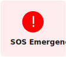
The SOS Emergency is triggered on the tablet when the elderly person wearing the watch presses the
SOS Button or when they might fall (Since the watch has a feature of fall detection).
Since it was difficult for the elderly people to take their medicines on time this feature was introduced.
The caretaker is notified if an elderly person has failed to take their medicines.
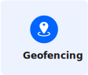
Dementia is common in elderly people. Hence, geofencing is used to track the location of the elderly people.
A perimeter is set by the caretakers. If a certain boundary is crossed, the caretaker gets a notification.
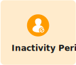
If the inactivity time crosses a certain number of hours, the caretaker is alerted and asked to check up on the elderly person.
The caretakers keep track of the answers given by the elderly person during their daily Q&A session.
This data can be used to analyse a person’s mood and provide special help if needed.
Wireframes.
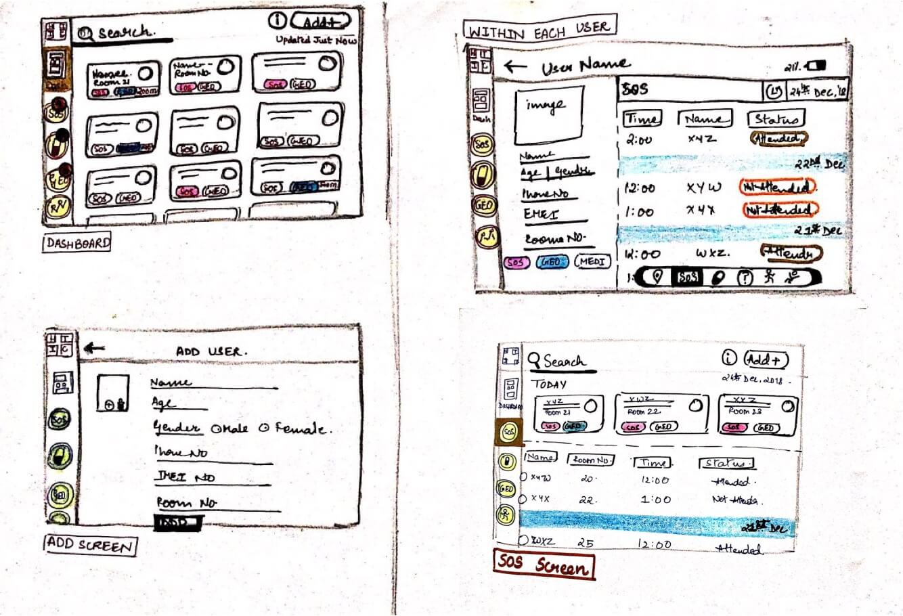
Visual Design.
a.) Dashboard
While designing the dashboard, I had to take into consideration the cognitive load on the caretaker.
Hence, I started prioritizing the information that will be of utmost importance to the caretaker in case of an emergency. They were:
- What kind of an emergency it is?
- Where to go, to attend to the emergency?
Hence, priority was given to the “EMERGENCY INDICATORS” and “ROOM NUMBER”
The most interesting part was designing the emergency indicators.
We had a lot of discussions to decide whether to use colors or icons or icon + text or using only colored text.
After doing a bit of research on color theory and going through the research conducted by
the Nielsen Norman group, we went with using the icon + text + color combination.
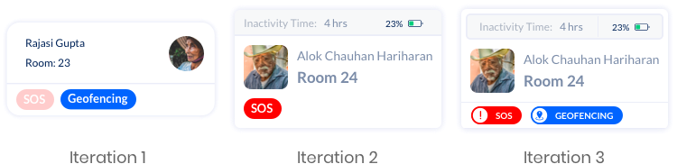
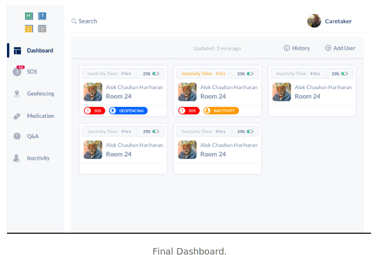
b.) Individual User Screen.
The main questions I asked while designing these screens were:
- How can the caretakers turn off the Emergency Indicator after attending to it?
- What specific information should be shown for each user?
- How to categorize the daily data received from the watch?
- What if I want to view the historical data of a user?
- How can I edit the personal information of an existing user?
- Do we need to have some indicator that will inform us when the data is updated?
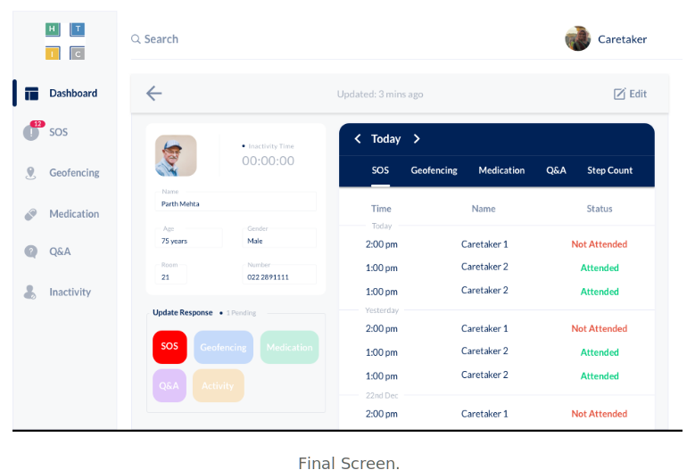
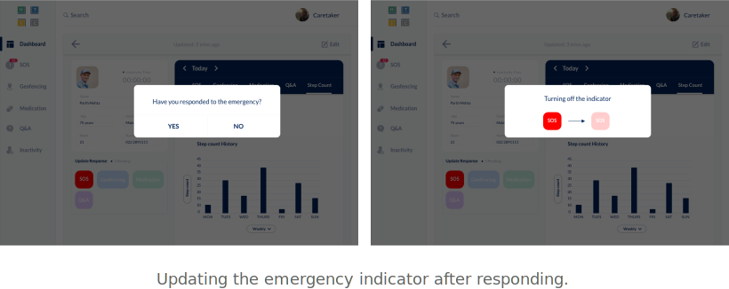
c.) Individual Feature Screen.
We wanted to use some kind of filter to classify the extensive data that will be generated from the watch.
This filtering would help give a new dimension to the dataset.
It would also help in some base level analysis of the data and help find some trends in the occurence of the
various emergency indicators.
For example, if a trend is observed that most of the GEOFENCING indicators are ticked off during the evenings when the elderly
people go for their daily walks then arrangements could be made to increase security during this time.
Since, this was an add-on feature, I only made one screen for tracking the SOS emeregency indicator.
However, in the final development phase this feature was not implemented.
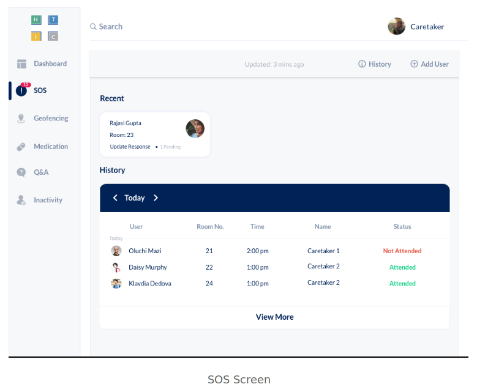
d.) History.
While uploading my designs on the Google Drive, I found this “View Details” icon on the right corner.
It gave me an overview of all the activity that took place for that particular day/week/month.
That is when I realised that even though I have implemented a feature-wise (or emergency indicator)
filter I cannot still get an overview of all the activity that took place today.
This data will be a mixture of a number of different emergency indicators and hence will require a seperate space.
However, I failed to convince the team how valuable and important this feature would be for the caretaker.
How profound its insights would be! As a result, this feature was also scraped out during the development phase.
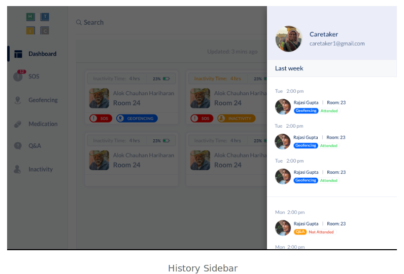
e.) Input Screens.
The caretaker needs to input the data of each new user as well as update certain information of existing users if need be.
I took references from the Material Design guidelines to solve these screens.
Initially, I did not take in to account the space which will be occupied by the keyboard, and the orientation of the tablet. Hence, I had to work on the the alignment of a few text boxes again.
Also, the basic principles of form design such as allowing the user to go back, keeping the user informed about the next step, giving adequate information about the different states of the textboxes were taken into consideration.
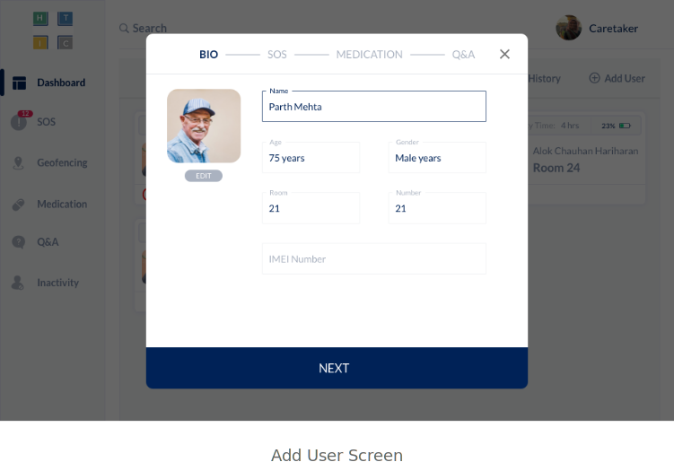
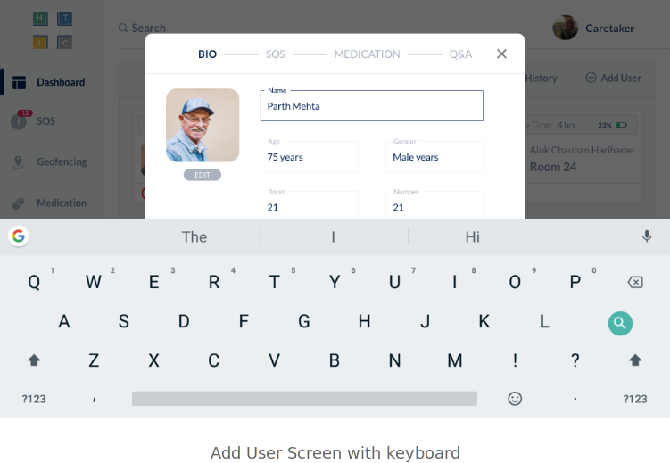
Developed Screens.
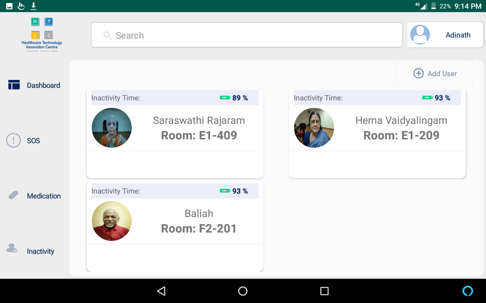
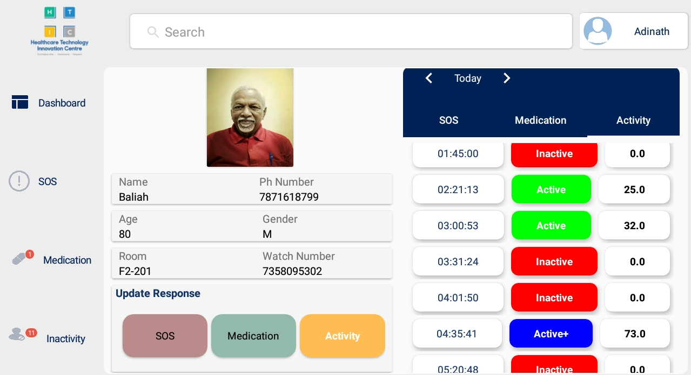
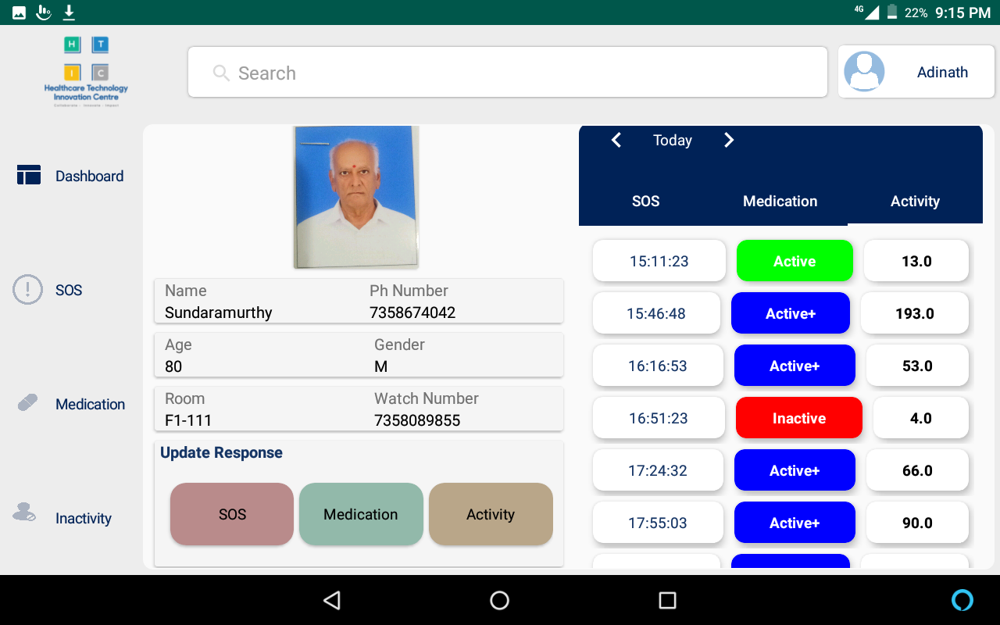
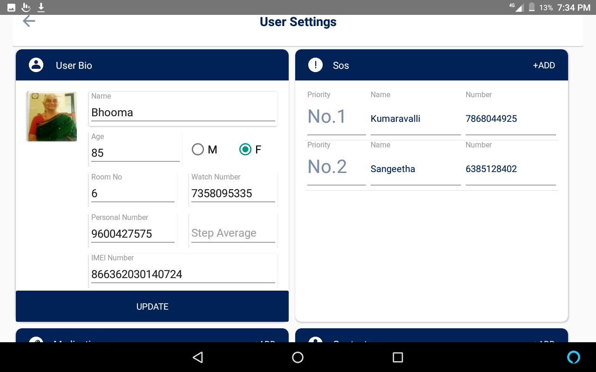
{kind=link}
{kind=link}
{kind=link}